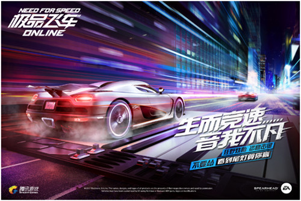

极品飞车1发行于1995年，是专业汽车杂志RoadTrack和EA的合作产物。游戏中收录了当时欧美日三地的一流跑车。起初发行于一台名叫3DO的游戏主机，直至该 主机退出市场，才被移植至PC。因为RoadTrack杂志的赛车数据十分专业，导致不同车型之间的速度差别十分明显，较差车型在游戏中基本毫无竞争力，因此游戏平衡性对于本作来说算是比较糟糕。游戏中赛车换档时，会有一个档杆动作。1代的安装界面是历代中最优秀的 极品飞车2 极品飞车2发行于1997年，这一代为向Win+DX平台过渡起了重要的承接作用。过去一年间业界主要的技术成果几乎都可以在游戏中找到。汽车制造业本身发展，在游戏中得到了再现。 极品飞车3：热力追踪 极品飞车3：热力追踪发行于1998年，被众多玩家誉为EA最成功一代的极品飞车。除了以往的玩法以外，还把在极品飞车1中出现过的警车追击模式加入其中。 而警车追击模式中，玩家将不只会成为被警车追击的对象，而可以驾御警车。玩家可在追击时使用直升飞机和陆地支援来拦截非法赛车手。 极品飞车：孤注一掷 极品飞车：孤注一掷发行于1999年，这款游戏，仍旧继承《极品飞车》系列的优秀血脉，同时新增一些新的3D技术和模式，并将警车追击模式应用更为广泛。 极品飞车：保时捷之旅 极品飞车：保时捷之旅发行于2000年，这款游戏的模式保持以前的设定。游戏画面逼真，加入了保时捷自保时捷356起的所有经典车型，注重了驾驶感受，因此玩家喜爱的热力追逐模式则不复存在，取代的的是开放式公路追逐和工厂驾驶员模式。 极品飞车：热力追踪2 品飞车：热力追踪2发行于2002年，这款游戏没有沿袭《极品飞车：保时捷之旅》的游戏内容，游戏背景则是《极品飞车3：热力追踪》背景。在游戏中，玩家一样可以选择各种超级跑车在各种赛道上展开竞争。采用全新模拟竟速引擎，用高速和赛车风格挑战拥堵的交通、警车、不可控的自然环境，通过互联网与其他玩家一起体验游戏乐趣。 22种外国顶级跑车，12条赛道加各种镜象变形赛道，炽热的速度、驾驶赛车躲避障碍、用200公里以上的时速躲避警车的追捕，通过60多种比赛事件获得各种比赛奖励。 玩家在驾驶汽车时，可以根据自己喜欢的驾驶视觉。有车内和车外视觉。另外还设计了一个照后镜。在《极品飞车6—热力追踪2》中警车的AI 也得到了大幅度提高。画面中上方的5个星星，当第一次逆向行车时，电脑就会给记上一个星，这时就有1辆警车追赶。违反的交通规则越多，星星就会上升，警车也不是那么容易甩掉的了，两辆警车会左右夹击。如果挂上三个以上星星，这时天上就会出现直升机扔下汽油炸弹。另外在赛道上也会有钉排。 另外，游戏中特别设计了像电影慢镜头一样的。慢镜头。当车辆在撞击和飞起时，电脑会自动播放出来。又看大片的感觉，仿佛置身于一场激烈的飙车电影中。 在2002年，由于电脑游戏的迅速发展，各国的游戏业也风起云涌。另外，微软公司在当年推出了新型显卡使游戏的画质画面得到很大改观，动作射击游戏渐渐成为游戏新宠。加上网络游戏的介入使体育竞技类游戏有了下滑趋势，《极品飞车6：热力追踪2》却异军突起。在2002 年在全美销量突破了200万。 没有《极品飞车6》的成功，就没有其后续集的出现。 极品飞车：地下狂飙 游戏于2003年11月17日上市。极品飞车一改以前的风格，将游戏赛场从以前的环山公路和郊外草原转移到了夜晚的都市里，作为系列的第七部正统续作，游戏开发小组放弃了一贯以世界名车加秀丽风光的游戏风格，转而打造出一部以地下赛车文化为主线的作品并首次引入了故事情节，讲述了一名地下车手为了成名而不断比赛的故事。 游戏的音响效果细腻，甚至连变速箱齿轮咬合的声音都被真实呈现，加上贯穿游戏的节奏感极强的摇滚乐，所有这些视觉、听觉上的高水准制作使得“地下车会”逼真的刻画出深受西方年轻人喜爱的改车、飚车世界。
游戏文化
时间： 管理员

